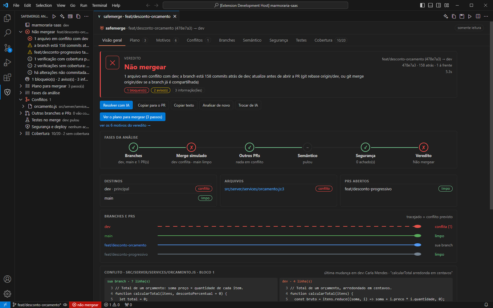
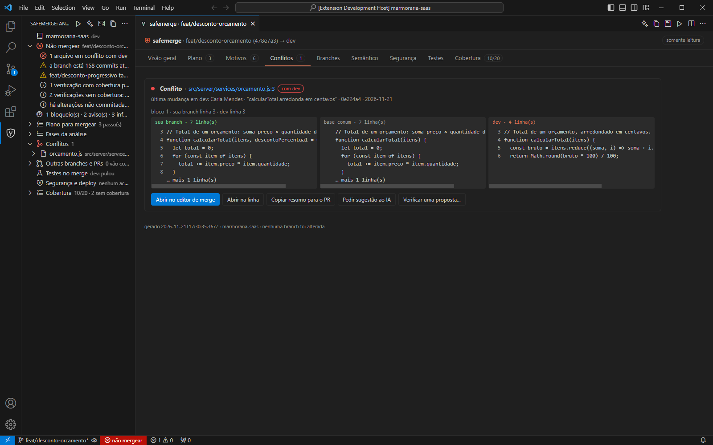
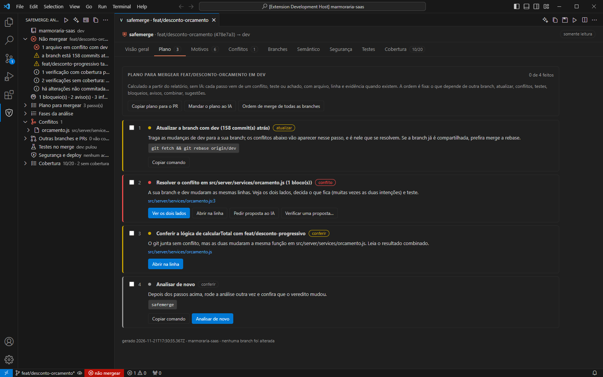

Saiba se a sua branch pode entrar antes do merge.
O safemerge simula o merge com o destino e com cada PR aberto, roda os seus testes no resultado e confere a segurança do que a branch traz. Sem mudar nada no seu repositório, ele diz se pode mergear, por quê, e em qual arquivo e linha.
Grátis e de código aberto (MIT). Zero dependências em produção. Também roda no terminal, no pre-push e no GitHub Actions.
- Os testes quebram só com as duas branches juntas: o PR #41 renomeou
calcularTotal, que a sua branch ainda chama.src/pedidos/desconto.ts:42 - Um token foi commitado e apagado no commit seguinte, mas continua no histórico.
config/pagamento.ts · commit 7c2e1a9
O que quebra produção sem o git reclamar.
O git só avisa do conflito na hora do merge, e só do conflito de texto. Num time com vários PRs abertos, o problema costuma ser outro.
dev renomeou uma função que o seu PR ainda chama. O git junta sem reclamar, e o deploy quebra..env commitado.Um veredito, os motivos e o plano para mergear.
Cada verificação diz se rodou, rodou em parte, pulou ou ficou sem ferramenta. Nunca "0 problemas" sem ter olhado. E o relatório termina com o que fazer, em ordem, para a branch poder entrar.



Medido num cenário de produção.
Cerca de 150 módulos, 160 commits na dev e 18 branches abertas, cada uma com uma situação diferente. Sem nenhuma ferramenta externa instalada.
| Situações plantadas detectadas | 34 de 34 |
| Veredito certo | 18 de 18 branches |
| Alarmes falsos | 0 |
| Tempo por branch, com a suíte de testes no merge | 2,2 s (mediana, Windows) |
| Ordem de merge das 17 branches abertas | 13,6 s com 4 em paralelo; 1,2 s repetindo sem mudanças |
| Pasta com front e back | 4,0 s no total, o tempo do mais lento |
O cenário foi escrito junto com a ferramenta e está no repositório para você reproduzir (npm run test:complex). O número que importa é o do seu repositório.
Use onde você já trabalha.
A mesma análise no editor, no terminal e no PR. Precisa de Node 20 ou mais novo e git 2.38 ou mais novo.
VS Code
Painel com veredito, plano, conflitos, testes e segurança. Conflito sublinhado no código e "Resolver com Claude" (ou a IA que você usa).
Terminal
O veredito antes de abrir o PR. Com --test-cmd, roda os testes no resultado do merge.
Claude Code
A skill /safemerge roda a análise, chama agentes de testes, revisão e segurança, e confere a resposta antes de entregar.
Antes de cada push
Bloqueia só o que é "não mergear", no modo rápido (até 20 s). Se o safemerge falhar, o push segue.
Em todo PR, no GitHub Actions
Comenta o relatório, marca os achados na linha do diff e falha o job conforme o nível que você escolher.
- uses: joaocarpim/safe-merge@v0.3.0 with: test-command: npm test fail-on: block
Prefere instalar a extensão à mão? Baixe o .vsix da última versão. Ferramentas externas (como Semgrep e OSV) são opcionais: sem elas, o safemerge usa regras internas e diz isso no relatório.